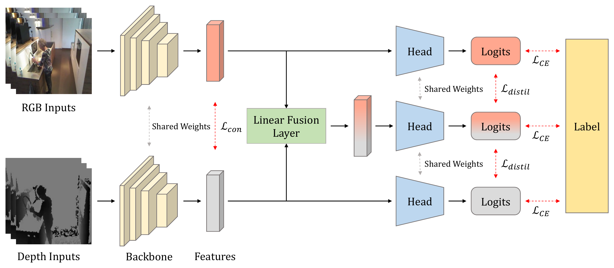
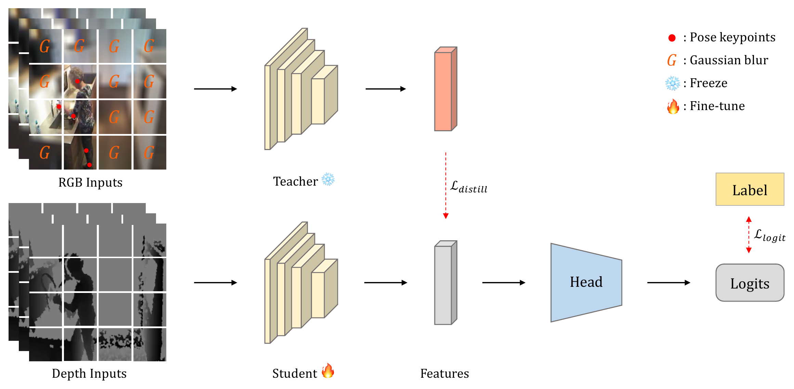
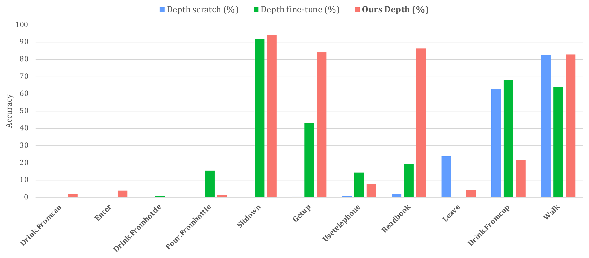
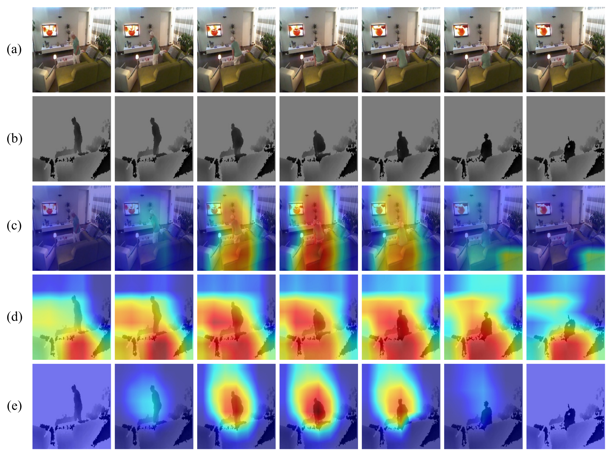

다중 센서를 활용한 병원 내 실시간 이상 상황 감지 인공지능 비지도학습 연구
개인정보 보호가 가능한 Depth 센서 기반의 행동 인식 시스템 연구. 학습 시에는 RGB·Depth 다중 모달리티를 함께 사용하고, 추론 시에는 어떤 단일 모달리티만으로도 강인한 성능을 유지하는 cross-modal distillation 모델을 개발했다.
Overview
병원 병실은 사생활 보호 문제로 RGB 카메라를 통한 실시간 모니터링이 어렵고, 개인 식별이 불가능한 센서의 활용이 요구된다. 이에 본 과제는 개인정보 보호가 가능한 Depth 센서를 기반으로 병원 내 환자의 행동을 인식하고 실시간으로 이상 상황을 감지하는 기술을 연구했다.
그러나 RGB 데이터에 비해 Depth 데이터는 취득이 상대적으로 어렵고, 센서별로 모델을 따로 학습하면 유지보수 비용이 증가한다. 또한 기존 다중 센서 학습 모델은 단일 센서만 입력될 경우 성능이 크게 저하되는 한계가 있다. 본 연구는 다중 센서로 학습하되 실제 환경에서는 단일 센서만으로도 높은 성능을 유지할 수 있는, 모달리티 변경에 유연한 인공지능 모델을 목표로 했다.
Approach
- 문맥 정보가 풍부한 대규모 RGB 사전학습 모델의 지식을 프라이버시 안전한 Depth 모델로 이전하는 cross-modality distillation을 탐구하고, 그중 RGB·Depth 특징을 선형 결합해 상호 보완하는 cross-modal mixing distillation을 제안
- 공유 백본으로 RGB·Depth 특징을 추출하고 depth:RGB = 7:3 비율로 선형 결합한 mixed feature까지 공유 head에 통과시켜 RGB·Depth·mixed 3개 logit을 생성하고, 각 logit을 cross-entropy로 학습
- 모달리티 특징을 정렬하는 consistency loss와 통합 feature 기반 logit으로 지식을 교환하는 distillation loss(MSE)를 결합해, 단일·다중 모달 어떤 입력에서도 일관된 성능을 확보
- 추론 시 Depth 단일 모달만으로도 동작하여 개인정보를 보호하면서 센서·연산 비용을 절감 (RGB·Depth·다중 모달 입력 모두 지원)
- 비교 방법으로 naive distillation과 body pose-aware distillation(키포인트로 전경·배경을 구분해 배경을 Gaussian blur 처리한 teacher → Depth student로 증류)을 함께 탐구
- I3D·TimeSformer·Video Swin Transformer 백본(Kinetics-400 사전학습)으로 Toyota Smarthome·NTU RGB+D 120에서 학습·평가


Methods & Tech
Results
I3D 기반 Toyota Smarthome에서 제안한 cross-modal mixing distillation은 Depth 단일 추론만으로 CS 74.43%, CV1 53.46%, CV2 61.09%를 달성하여 Depth scratch·Depth fine-tune은 물론 naive·body pose-aware distillation 보다도 높은 성능을 보였습니다. 특히 시점 변화가 큰 CV1에서 Depth scratch 대비 +15.35%p의 큰 향상을 기록하였습니다.
| Method | Inference | CS | CV1 | CV2 |
|---|---|---|---|---|
| RGB fine-tune | RGB | 76.76 | 48.52 | 62.73 |
| Depth scratch | Depth | 71.04 | 38.11 | 51.43 |
| Depth fine-tune | Depth | 73.46 | 46.36 | 56.43 |
| Naive distillation | Depth | 72.80 | 41.13 | 52.43 |
| Body pose-aware distillation | Depth | 73.76 | 46.73 | 59.14 |
| Cross-modal mixing distillation (Ours) | Depth | 74.43 | 53.46 | 61.09 |

백본을 TimeSformer·Video Swin Transformer로 바꿔도 동일한 경향이 나타났으며, 특히 NTU RGB+D 120 cross-setup에서 Depth scratch 대비 TimeSformer 11.84% → 79.54%, Video Swin Transformer 39.47% → 84.10%로 큰 폭의 향상을 보여 두 Depth 기반 벤치마크에서 SOTA 정확도를 달성하였습니다. 특징맵 시각화에서도 제안 방법이 배경이 아닌 전경(사람)에 집중하여, Depth scratch가 'Walk'로 오분류한 샘플을 'SitDown'으로 올바르게 예측함을 확인할 수 있습니다.

본 연구 결과는 「Privacy-Safe Action Recognition via Cross-Modality Distillation」 논문으로 정리되어 IEEE Access(IF 3.6, 2024)에 게재되었으며, 본인은 공동 제1저자(co-first author)로 참여하였습니다. 향후 과제로는 더 다양한 센서 환경과 상황에 대응할 수 있는 모델 연구를 제시하였습니다.